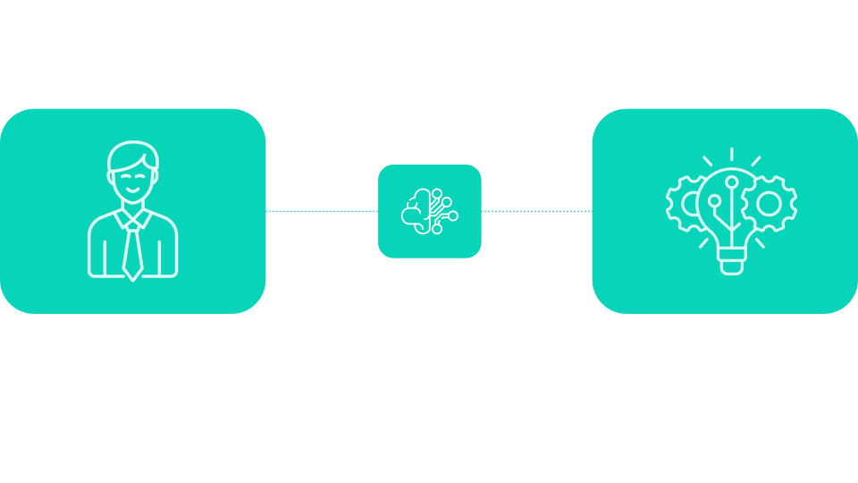

Wings platform capabilities, AI development services, strategic consulting, and advanced training give organizations a competitive edge over those simply using AI tool
Professional services
Our professional services empower your organization's decision-makers to understand AI's impact, enabling organization-wide upskilling and the redesign of processes for the AI era.Advanced services
Our advanced development services enable the creation of AI-powered solutions for full process automation, business insights generation, and automated professional content creation.